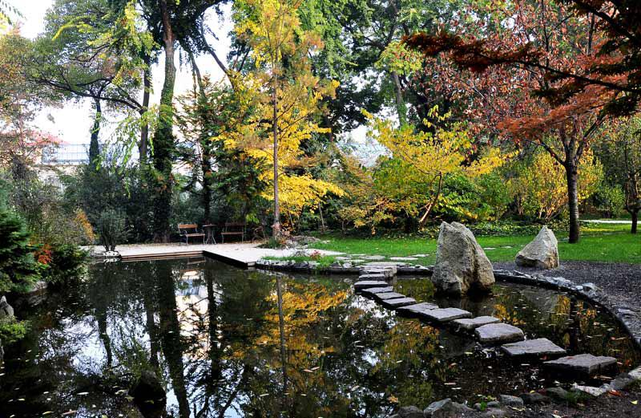
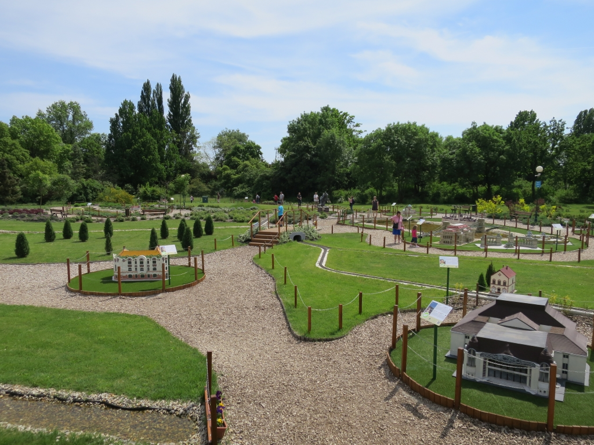
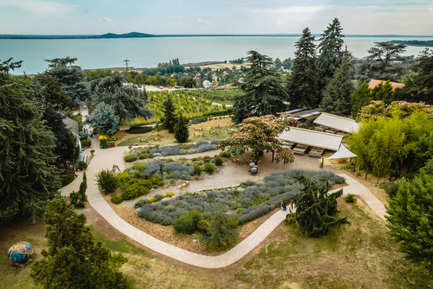

Pintér-kert Arborétum

A Pintér-kert Arborétum Pécsett, a Mecsek-oldalra felkúszó Tettye városrészben helyezkedik el. Nevét Pintér János (1879-1933) nyugalmazott pécsi banktisztviselőről kapta. A kert növénytani értékei miatt 1977-től országos Természetvédelmi Terület, 2009 óta a Nyugat-Mecsek Tájvédelmi Körzet része.
Az alsó rész a gyűjteményes kert. A közel száz évvel ezelőtt létrehozott arborétumnak csupán ez a része volt megtekinthető a 2013-ban lezajlott rekonstrukciót megelőzően. A látogatók kanyargós utakon, lépcsőkön haladva barangolhatják be a kertet, megcsodálva a fás- és lágyszárú növényeket, a két kis tavat, valamint a Nagyharsányi Szoborparkban készült műalkotásokat.
A felső rész, mely 2013 őszétől látogatható, a jellegzetes mecseki karsztbokorerdő látványát kínálja a vendégeknek. A parkerdő és természetszerű bokorerdő jelleg megőrzése mellett a gyűjteményes karaktert folyamatos telepítésekkel fokozatosan itt is kialakítjuk. A kertnek ez a része igen meredek, a szintkülönbség néhány száz méteren belül több mint 70 méter.
Füvészkert
Célunk a változatos élő növénygyűjtemény fenntartása, fejlesztése, mely a hazai természetes flóra bemutatása mellett mérsékelt övi dendrológiai és évelő lágyszárú, továbbá valamennyi kontinenst képviselő trópusi, szubtrópusi növények gyűjteményéből áll.1984-ben az elöregedett, régi kis üvegházak helyén korszerű, új bemutatóház épül, majd egy évvel később még egy üvegház, melyben a gyűjtemények gyarapítására és az eladásra szánt növények szaporítása folyik. 1992-től a Botanikus Kert a Magyar Arborétumok és Botanikus Kertek Szövetségének alapító tagja. 1998-tól a Botanikus Kert a Botanic Gardens Conservation International www.bgci.org nemzetközi botanikuskerti szervezet tagja. 2001-től a Botanikus Kert az egyetemnek a Természettudományi Kartól független, közvetlenül a a rektori vezetés alá tartozó egysége. 2005. szeptemberétől az ELTE Botanikus Kertje a Magyar Örökség díj tulajdonosa, 2006 májusában pedig, mint Kulturális Örökség került védelem alá.
Szarvasi Arborétum
A Hegyi mamutfenyő, a Kék pávák, vagy a Tündöklő kövek mellett számos érdekességet találsz a Szarvasi Arborétumban. Részt vehetsz velünk rövidebb, vagy hosszabb vezetett túrán gyalogosan, vagy kerékpárral a kertben. Virtuális játékban fedezheted fel az Arborétum történetét a mobiloddal. Sétád során fotózhatsz, és elmerenghetsz a változatos tájon. Számtalan élmény vár rád minden évszakban. Tarts velünk! Az Arborétum főbejáratától induló tematikus sétaútvonal egyrészt az érintett élőhelyeket, növényzetet mutatja be, másrészt ráhangol az út mentén elérhető fejlesztésekre, így a meditációs helyszínre, játszótérre, rendezvénytérre, kertekre stb. Az útvonal a bejárattól indul és oda is érkezik. Nyomvonalán 3 db új esőbeálló készült, a meglévő 4 db pedig felújításra került. Az útvonal játékos sétaútként is használható, valamint tájékoztató táblák segítségével Bolza Mariette életútja is megismerhető.
Folly Arborétum
Szeretnénk, ha minél több látogatónk megismerné a kertet és annak növényritkaságait. Éppen ezért rendszeresen – nyáron hetente többször, ősztől tavaszig hétvégente – kerti programokat szervezünk, ahol kollégáink kertismerete és szakértelme a garancia arra, hogy hasznos és érdekes információkat adjunk át vendégeinknek a birtok történetéről és az arborétum kiválóságairól. A csoport létszám korlátozott, a minőségi szolgáltatás és a sétautak kialakítása miatt. Ha kedveli és értékeli a finom borokat, kalandozzon velünk a szőlőtermesztés és borkészítés világában. A Folly nem csupán arborétum, hanem badacsonyi szőlőbirtok és pincészet. A program alkalmával megismerkedhet az itt honos szőlőfajtákkal, a talaj jellegzetességeivel. És hogyan készülnek a Folly díjnyertes borai? Különleges pincelátogatás csak a program résztvevőinek.